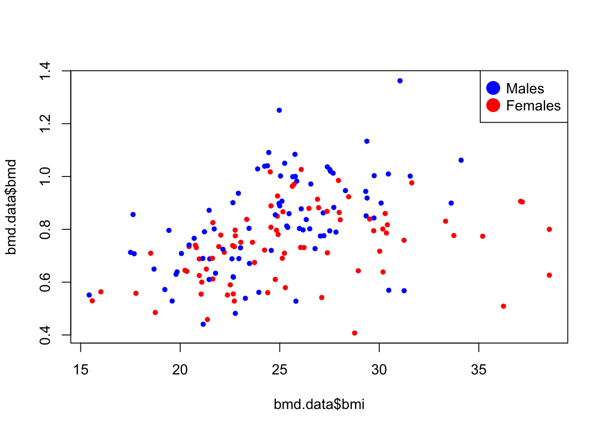

1 Supervised and unsupervised learning
1.1 Introduction
The methods in machine learning can be broadly divided into supervised and unsupervised learning methods.
In supervised learning, we have an outcome variable \(Y\) (also called output, response, dependent variable) and a set of predictors \(\mathbf{X}\) (also called features, dependent variables, covariates). The objective is to estimate the function \(f(\mathbf{X})\) that connects \(Y\) and \(\mathbf{X}\). For example,
\[ Y = f(\mathbf{X}) + \varepsilon \]
(if \(Y\) is categorical we generally consider the association of \(\mathbf{X}\) and the \(Pr(Y=k)\))
Having a dataset with observations of \(Y\) and \(X\) (called training set), we can use these data to find an estimate \(\hat f(\mathbf{X})\) according to some optimisation principle.
If we specify a functional for \(f(\mathbf{X})\), such as the linear regression model:\(f(\mathbf{X}) = \beta_0 + \beta_1X_1 + ... + \beta_p X_p\), we say that we are using a parametric method. If instead we allow the data to estimate the functional form of \(f(\mathbf{X})\), such as k-nearest neighbourhood regression, we call the method non-parametric.
In unsupervised learning , the goal is to model the underlying structure or distribution in the data without having the outcome \(Y\). In other words, we want to analyse how the features \(\mathbf{X}\) are clustered or associated. Examples of these methods are principle components analysis and k-means clustering.
1.2 Readings
Read the following chapters of An introduction to statistical learning:
If you are using R for the first time, I encourage you to complete the section
1.3 R review
Task 1 - Read a dataset and create a new variable
Read the bmd.csv dataset in R. You can download and read the data or use the path https://www.dropbox.com/s/7wjsfdaf0wt2kg2/bmd.csv?dl=1
bmd.data <- read.csv("https://www.dropbox.com/s/7wjsfdaf0wt2kg2/bmd.csv?dl=1")If you have downloaded the file, you need to substitute the url above by the path to file in your computer, e.g., “c:\my files\bmd.csv”
The variable id is the identification of the subjects in the dataset, and the variable age is their age. What is the age of the subject id=197?
bmd.data$age is the vector with the ages of all the subjects. Within that
vector we need to find the one where bmd.data$id == 197. Notice that double
equal sign “==” is a logic statement.
If we write bmd.data$id = 197 we are
assigning the value 197 to the variable id and every subject in the dataset
gets a new value 197 for that variable.
bmd.data$age[bmd.data$id == 197]## [1] 69.72845#or equivalent
bmd.data[bmd.data$id == 197, "age"]## [1] 69.72845#or
bmd.data[bmd.data$id == 197, 2] #age is the second variable## [1] 69.72845Let’s now create a new variable age.months which is age in months (the original is in years).
# we just need to multiply the original by 12
bmd.data$age.months <- bmd.data$age * 12
# we can use = instead of <-
bmd.data$age.months = bmd.data$age * 12Finally, let’s recode the variable age into age categories <=50, (50,60], (60,70] and >60.
# we can use the function cut() to
#create the categories
bmd.data$age.cat <- cut(bmd.data$age,
c(0,50,60,70, 100))
# alternative
bmd.data$age.cat2[bmd.data$age<50] <- 1
bmd.data$age.cat2[bmd.data$age>=50 & bmd.data$age<60] <- 2
bmd.data$age.cat2[bmd.data$age>=60 & bmd.data$age<70] <- 3
bmd.data$age.cat2[bmd.data$age>=70] <- 4
#frequencies of the categories
table(bmd.data$age.cat)##
## (0,50] (50,60] (60,70] (70,100]
## 24 45 48 52TRY IT YOURSELF:
- Get the ages for all the male subjects, i.e.,
bmd.data$sex == "M".
See the solution code
bmd.data$age[bmd.data$sex == "M"]
- What is the length of the vector above? Or, in other words, how many subjects are male?
See the solution code
length(bmd.data$age[bmd.data$sex == "M"])
#or
table(bmd.data$sex)
- Using the variables weight_kg and height_cm, compute the body mass index? \(\frac{\text{weight in Kg}}{(\text{heigh in m})^2}\)
See the solution code
bmd.data$bmi <- bmd.data$weight_kg /(bmd.data$height_cm/100)**2
Task 2 - Histogram
There are several packages specific to graphs
ggplot2, lattice, plotly, highcharter, sunburstR, dygraphs, rgl,…
The R Graph Gallery is an excellent
learning resource for complex plots and visualisation
We will start with basic functions. Let’s produce the histogram of the variable bmi created in task 1
hist(bmd.data$bmi)
Let’s edit the title and x-axis label
hist(bmd.data$bmi,
main = "My 1st histogram",
xlab = "Body Mass Index")
And we can also plot the distribution for males and females, separately
#histogram for males
hist(bmd.data$bmi[bmd.data$sex=="M" ],
breaks = 10, # number of cutoff for the bars
main= "My 1st histogram",
xlab= "Body Mass Index",
col=rgb(0,0,1,.5)) # color of the bars
#histogram for females
hist(bmd.data$bmi[bmd.data$sex=="F" ],
breaks = 10,
main= "My 1st histogram",
xlab= "Body Mass Index",
col=rgb(1,0,0,.5),
add=T) # superimposes the histograms
# Add legend
legend("topright",
legend=c("Males","Females"),
col=c(rgb(0,0,1,0.5), rgb(1,0,0,0.5)),
pt.cex=2, pch=15 )
Task 3 - Scatter and boxplot
To see the relation between bone mineral density (BMD) and age we can produce a scatter plot:
# BMD
plot(bmd.data$age,bmd.data$bmd)
Or a boxplot between bone mineral density (BMD) by categories of age created in task 1
# BMD
boxplot(bmd.data$bmd ~ bmd.data$age.cat)
And with a bit more work:
# BMD
boxplot(bmd.data$bmd ~ bmd.data$age.cat,
main = "A nice boxplot (at least for a colorblind)",
xlab = "Age categories",
ylab = "Bone Mineral Density",
col = terrain.colors(4) )
# Add data points
mylevels <- levels(bmd.data$age.cat)
levelProportions <- summary(bmd.data$age.cat)/nrow(bmd.data)
for(i in 1:length(mylevels)){
thislevel <- mylevels[i]
thisvalues <- bmd.data[bmd.data$age.cat == thislevel, "bmd"]
#take the x-axis indices and add a jitter,
#proportional to the N in each level
myjitter <- jitter(rep(i, length(thisvalues)),
amount=levelProportions[i]/2)
points(myjitter, thisvalues,
pch=20, col=rgb(0,0,0,.9))
}
TRY IT YOURSELF:
- Plot a scatter for the relation of bmi and bmd.
See the solution code
plot(bmd.data$bmi,bmd.data$bmd)
- Plot a scatter for the relation of bmi and bmd with the dots painted by the variable sex.
See the solution code
plot(bmd.data$bmi,bmd.data$bmd,
pch=20,
col= ifelse(bmd.data$sex=="M", #blue for males
"blue", #red for females
"red")
)
# Add legend
legend("topright",
legend=c("Males","Females"),
col=c("blue", "red"),
pt.cex=3, pch=20 )